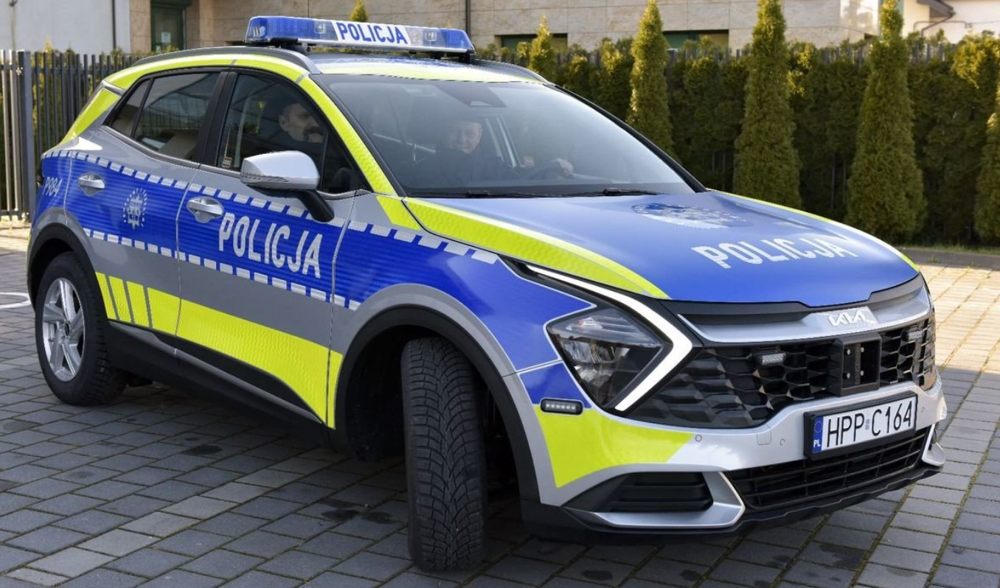

Nowy Radiowóz w Naszym Posterunku
Nasza jednostka otrzymała nowy radiowóz, który pomoże nam jeszcze skuteczniej pełnić nasze obowiązki. Dziękujemy wszystkim, którzy przyczynili się do tego zakupu!

Nasza jednostka otrzymała nowy radiowóz, który pomoże nam jeszcze skuteczniej pełnić nasze obowiązki. Dziękujemy wszystkim, którzy przyczynili się do tego zakupu!
W wyniku intensywnej pracy naszych funkcjonariuszy udało się zatrzymać grupę przestępczą zajmującą się handlem narkotykami. Dziękujemy za zaangażowanie i profesjonalizm.
W zeszłym tygodniu odbyła się uroczystość wręczenia awansów dla naszych zasłużonych funkcjonariuszy. Gratulujemy wszystkim awansowanym i życzymy dalszych sukcesów!